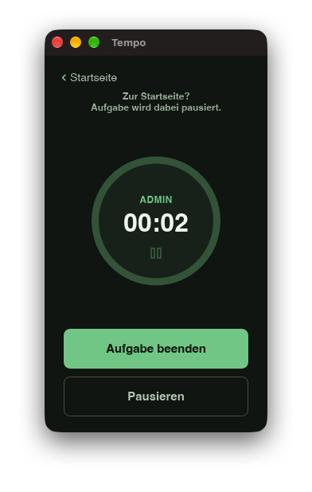
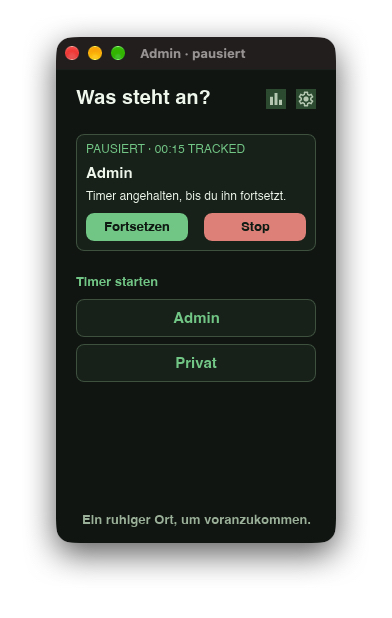
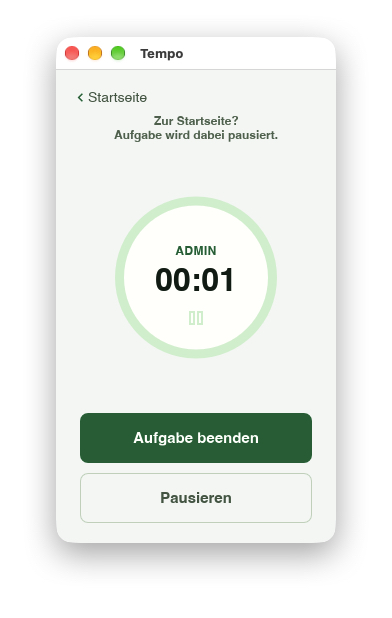
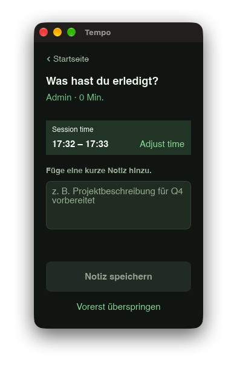
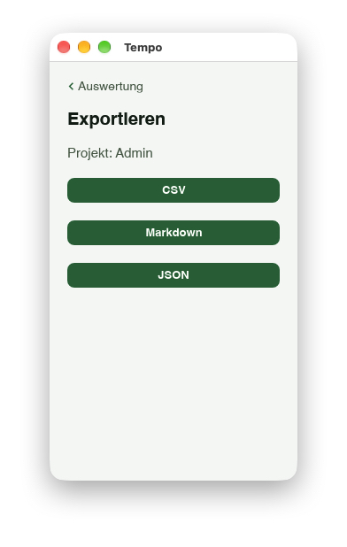
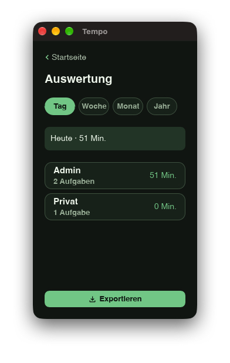
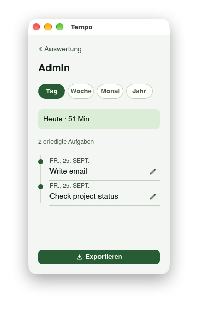
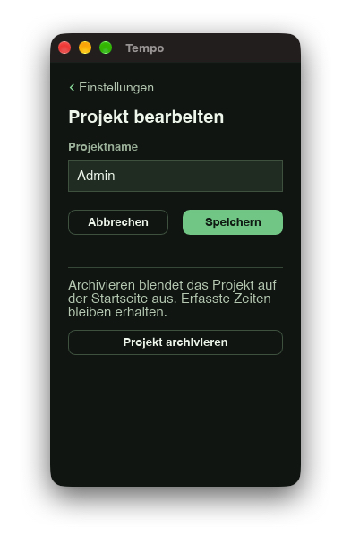
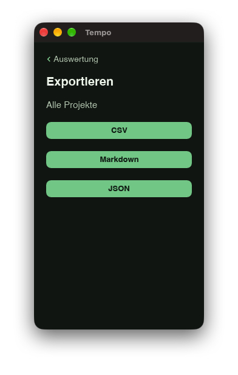

Timer unter deiner Kontrolle
Starte, pausiere, setze fort und beende Sessions. Beim Wechsel zur Startseite pausiert die Aufgabe, damit Abwesenheit nicht mitgezählt wird.
Eine lokale Desktop-App für macOS
Tempo hilft dir, Unterbrechungen zu bewältigen und deine Arbeit genau festzuhalten. Erfasse Zeit nach Projekt, ergänze bei Bedarf eine Notiz und werte deine Arbeit aus – ohne Benutzerkonto.
⌘ Zuerst für macOS

Auch bei Unterbrechungen fokussiert
Starte ein anderes Projekt, während die ursprüngliche Aufgabe pausiert. Tempo erfasst jeweils eine Unterbrechung separat. Danach steht die ursprüngliche Aufgabe wieder pausiert bereit; du setzt sie bewusst fort.

Starte, pausiere, setze fort und beende Sessions. Beim Wechsel zur Startseite pausiert die Aufgabe, damit Abwesenheit nicht mitgezählt wird.
Ergänze nach einer Session eine kurze Aktivitätsnotiz oder überspringe sie und trage sie später nach.
Passe Start- und Endzeit an. Bearbeite Notizen oder lösche abgeschlossene Einträge später.
Erstelle Projekte und benenne sie um. Archivierte Projekte verschwinden von der Startseite; ihre Einträge bleiben erhalten und das Projekt lässt sich wiederherstellen.
Prüfe Projektsummen für Tag, Woche, Monat oder Jahr und sieh dir die einzelnen Sessions an.
Steuere Timer und Projektwechsel über das Tray. Tempo folgt dem Erscheinungsbild des Systems; Oberfläche und exportierte Berichte unterstützen Deutsch und Englisch.



Auswerten und exportieren
Sieh die Summen pro Projekt und die einzelnen Sessions dahinter. Exportiere alle Projekte oder ein einzelnes Projekt als CSV, Markdown oder JSON.




Deine Daten gehören dir
Tempo speichert Projekte, Sessions und Notizen lokal in einer SQLite-Datenbank. Die App funktioniert ohne Cloud-Dienst und Benutzerkonto.
macOS zuerst
Die Veröffentlichung für macOS ist in Vorbereitung. Sobald der App-Store-Eintrag verfügbar ist, erscheint hier der Download-Link. Windows und Linux folgen später.
Erste Veröffentlichung. Der Mac-App-Store-Link folgt nach der Freigabe.
Für eine spätere Veröffentlichung geplant.
Für eine spätere Veröffentlichung geplant.